공조냉동기계산업기사 (2016-03-06 기출문제)
1과목: 공기조화
1. 공기의 감습 방식으로 가장 거리가 먼 것은?
- 냉각방식
- 흡수방식
- 흡착방식
- 순환수분무방식
(정답률: 76%)

2. 일반적인 취출구의 종류로 가장 거리가 먼 것은?
- 라이트-트로퍼(light-troffer)형
- 아네모스탯(annemostat)형
- 머시룸(mushroom)형
- 웨이(way)형
(정답률: 86%)
3. 공조방식 중 각층 유닛방식에 관한 설명으로 틀린 것은?
- 송풍 덕트의 길이가 짧게 되고 설치가 용이하다.
- 사무실과 병원 등의 각층에 대하여 시간차 운전에 유리하다.
- 각층 슬래브의 관통덕트가 없게 되므로 방재상 유리하다.
- 각 층에 수배관을 설치하지 않으므로 누수의 염려가 없다.
(정답률: 78%)
4. 다음 공조방식 중에 전공기 방식에 속하는 것은?
- 패키지 유닛 방식
- 복사 냉난방 방식
- 팬 코일 유닛 방식
- 2중덕트 방식
(정답률: 72%)
5. 수분량 변화가 없는 경우의 열수분비는?
- 0
- 1
- -1
- ∞
(정답률: 70%)
6. 원심식 송풍기의 종류로 가장 거리가 먼 것은?
- 리버스형 송풍기
- 프로펠러형 송풍기
- 관류형 송풍기
- 다익형 송풍기
(정답률: 76%)
7. 취급이 간단하고 각 층을 독립적으로 운전할 수 있어 에너지 절감효과가 크며 공사시간 및 공사비용이 적게 드는 방식은?
- 패키지 유닛 방식
- 복사 냉난방 방식
- 인덕션 유닛 방식
- 2중 덕트 방식
(정답률: 81%)
8. 다음의 송풍기에 관한 설명 중 ( ) 안에 알맞은 내용은?
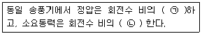
- ㉠ 2승에 비례 ㉡ 3승에 비례
- ㉠ 2승에 반비례 ㉡ 3승에 반비례
- ㉠ 3승에 비례 ㉡ 2승에 비례
- ㉠ 3승에 반비례 ㉡ 2승에 반비례
(정답률: 83%)
9. 송풍기에 관한 설명 중 틀린 것은?
- 송풍기 특성곡선에서 팬 전압은 토출구와 흡입구에서의 전압 차를 말한다.
- 송풍기 특성곡선에서 송풍량을 증가시키면 전압과 정압은 산형(山形)을 이루면서 강하한다.
- 다익형 송풍기는 풍량을 증가시키면 축 동력은 감소한다.
- 팬 동압은 팬 출구를 통하여 나가는 평균속도에 해당되는 속도압이다.
(정답률: 74%)
10. 난방설비에 관한 설명으로 옳은 것은?
- 온수난방은 증기난방에 비해 예열시간이 길어서 충분한 난방감을 느끼는데 시간이 걸린다.
- 증기난방은 실내 상하 온도차가 적어 유리하다.
- 복사난방은 급격한 외기 온도의 변화에 대해 방열량 조절이 우수하다.
- 온수난방의 주 이용열은 온수의 증발잠열이다.
(정답률: 79%)
11. 난방기기에서 사용되는 방열기 중 강제대류형 방열기에 해당하는 것은?
- 유닛히터
- 길드 방열기
- 주철제 방열기
- 베이스보드 방열기
(정답률: 72%)
12. 31℃의 외기와 25℃의 환기를 1 : 2의 비율로 혼합하고 바이패스 팩터가 0.16인 코일로 냉각 제습할 때의 코일 출구온도는? (단, 코일의 표면온도는 14℃이다.)
- 약 14℃
- 약 16℃
- 약 27℃
- 약 29℃
(정답률: 59%)
13. 전열량에 대한 현열량의 변화의 비율로 나타내는 것은?
- 현열비
- 열수분비
- 상대습도
- 비교습도
(정답률: 89%)
14. 증기난방 설비에서 일반적으로 사용 증기압이 어느 정도부터 고압식이라고 하는가?
- 0.01kgf/cm2 이상
- 0.35kgf/cm2 이상
- 1kgf/cm2 이상
- 10kgf/cm2 이상
(정답률: 85%)
15. 다음 그림과 같은 덕트에서 점 ① 의 정압 P1=15mmAq, 속도 V1=10m/s일 때, 점② 에서의 전압은? (단, ①-② 구간의 전압손실은 2mmAq, 공기의 밀도는 1kg/m3로 한다.)
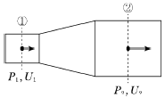
- 15.1mmAq
- 17.1mmAq
- 18.1mmAq
- 19.1mmAq
(정답률: 52%)
16. 바이패스 팩터에 관한 설명으로 옳은 것은?
- 흡입공기 중 온난 공기의 비율이다.
- 송풍공기 중 습공기의 비율이다.
- 신선한 공기와 순환공기의 밀도 비율이다.
- 전 공기에 대해 냉·온수코일을 그대로 통과하는 공기의 비율이다.
(정답률: 86%)
17. 현열 및 잠열에 관한 설명으로 옳은 것은?
- 여름철 인체로부터 발생하는 열은 현열뿐이다.
- 공기조화 덕트의 열손실은 현열과 잠열로 구성되어있다.
- 여름철 유리창을 통해 실내로 들어오는 열은 현열뿐이다.
- 조명이나 실내기구에서 발생하는 열은 현열뿐이다.
(정답률: 59%)
18. 건물의 11층에 위치한 북측 외벽을 통한 손실열량은? (단, 벽체면적 40m2, 열관류율 0.43W/m2·℃, 실내온도 26℃, 외기온도 -5℃, 북측 방위계수 1.2, 복사에 의한 외기온도 보정 3℃이다.)
- 약 495.36W
- 약525.38W
- 약 577.92W
- 약 639.84W
(정답률: 50%)
19. 다음 가습방법 중 가습효율이 가장 높은 것은?
- 증발 가습
- 온수 분무 가습
- 증기 분무 가습
- 고압수 분무 가습
(정답률: 77%)
20. 열원방식의 분류 중 특수 열원방식으로 분류되지 않는 것은?
- 열회수 방식(전열 교환 방식)
- 흡수식 냉온수기 방식
- 지역 냉난방 방식
- 태양열 이용 방식
(정답률: 67%)
2과목: 냉동공학
21. 흡수식 냉동기에 사용되는 냉매와 흡수제의 연결이 잘못된 것은?
- 물(냉매) - 황산(흡수제)
- 암모니아(냉매) - 물(흡수제)
- 물(냉매) - 가성소다(흡수제)
- 염화에틸(냉매) - 취화리튬(흡수제)
(정답률: 71%)
22. 표준냉동사이클에 대한 설명으로 옳은 것은?
- 응축기에서 버리는 열량은 증발기에서 취하는 열량과 같다.
- 증기를 압축기에서 단열압축하면 압력과 온도가 높아진다.
- 팽창밸브에서 팽창하는 냉매는 압력이 감소함과 동시에 열을 방출한다.
- 증발기내에서의 냉매증발온도는 그 압력에 대한 포화온도보다 낮다.
(정답률: 69%)
23. 10냉동톤의 능력을 갖는 역카르노 사이클이 적용된 냉동기관의 고온부 온도가 25℃, 저온부 온도가 -20℃일때, 이 냉동기를 운전하는데 필요한 동력은?
- 1.8kW
- 3.1kW
- 6.9kW
- 9.4kW
(정답률: 53%)
24. 다음 중 증발식 응축기의 구성요소로서 가장 거리가 먼 것은?
- 송풍기
- 응축용 핀-코일
- 물분무 펌퍼 및 분배장치
- 일리미네이터, 수공급장치
(정답률: 60%)
25. 냉동장치의 증발압력이 너무 낮은 원인으로 가장 거리가 먼 것은?
- 수액기 및 응축기내에 냉매가 충만해 있다.
- 팽창밸브가 너무 조여 있다.
- 증발기의 풍량이 부족하다.
- 여과기가 막혀 있다.
(정답률: 80%)
26. 표준 냉동장치에서 단열팽창과정의 온도와 엔탈피 변화로 옳은 것은?
- 온도 상승, 엔탈피 변화 없음
- 온도 상승, 엔탈피 높아짐
- 온도 하강, 엔탈피 변화 없음
- 온도 하강, 엔탈피 낮아짐
(정답률: 66%)
27. 왕복동 압축기의 유압이 운전 중 저하되었을 경우에 대한 원인을 분류한 것으로 옳은 것을 모두 고른 것은?
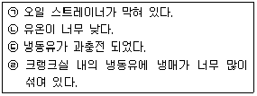
- ㉠, ㉡
- ㉢, ㉣
- ㉠, ㉣
- ㉡, ㉢
(정답률: 69%)
28. 터보 압축기의 특징으로 틀린 것은?
- 부하가 감소하면 서징 현상이 일어난다.
- 압축되는 냉매증기 속에 기름방울이 함유되지 않는다.
- 회전운동을 하므로 동적균형을 잡기 좋다.
- 모든 냉매에서 냉매회수장치가 필요 없다.
(정답률: 77%)
29. 냉동장치에서 흡입배관이 너무 작아서 발생되는 현상으로 가장 거리가 먼 것은?
- 냉동능력 감소
- 흡입가스의 비체적 증가
- 소비동력 증가
- 토출가스온도 강하
(정답률: 64%)
30. 2단압축 냉동장치에서 게이지 압력계의 지시계가 고압 15kgf/cm2g, 저압 100mmHg을 가리킬 때, 저단압축기와 고단압축기의 압축비는? (단, 저·고단의 압축비는 동일하다.)
- 3.6
- 3.8
- 4.0
- 4.2
(정답률: 30%)
31. 냉동사이클이 다음과 같은 T-S 선도로 표시되었다. T-S 선도 4-5-1의 선에 관한 설명으로 옳은 것은?
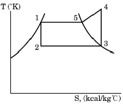
- 4-5-1은 등압선이고 응축과정이다.
- 4-5는 압축기 토출구에서 압력이 떨어지고 5-1은 교축과정이다.
- 4-5는 불응축 가스가 존재할 때 나타나며, 5-1만이 응축과정이다.
- 4에서 5로 온도가 떨어진 것은 압축기에서 흡입가스의 영향을 받아서 열을 방출했기 때문이다.
(정답률: 70%)
32. 증발온도(압력)하강의 경우 장치에 발생되는 현상으로 가장 거리가 먼 것은?
- 성적계수(COP) 감소
- 토출가스 온도상승
- 냉매 순환량 증가
- 냉동 효과 감소
(정답률: 73%)
33. 냉동장치에서 윤활의 목적으로 가장 거리가 먼 것은?
- 마모 방지
- 기밀 작용
- 열의 축적
- 마찰동력 손실방지
(정답률: 80%)
34. 냉동사이클 중 P-h 선도(압력-엔탈피 선도)로 계산 할 수 없는 것은?
- 냉동능력
- 성적계수
- 냉매순환량
- 마찰계수
(정답률: 82%)
35. 냉동장치의 압축기 피스톤 압출량이 120m3/h, 압축기 소요동력이 1.1kW, 압축기 흡입가스의 비체적이 0.65m3/kg, 체적효율이 0.81일 때, 냉매 순환량은?
- 100kg/h
- 150kg/h
- 200kg/h
- 250kg/h
(정답률: 53%)
36. 냉매에 대한 설명으로 틀린 것은?
- 응고점이 낮을 것
- 증발열과 열전도율이 클 것
- R-500은 R-12와 R-152를 합한 공비 혼합냉매라 한다.
- R-21은 화학식으로 CHCl2F이고, CClF2-CClF2는R-113이다.
(정답률: 76%)
37. 압축기의 체적효율에 대한 설명으로 옳은 것은?
- 이론적 피스톤 압출량을 압축기 흡입직전의 상태로 환산한 흡입가스량으로 나눈 값이다.
- 체적 효율은 압축비가 증가하면 감소한다.
- 동일 냉매 이용 시 체적효율은 항상 동일하다.
- 피스톤 격간이 클수록 체적효율은 증가한다.
(정답률: 68%)
38. 1단 압축 1단 팽창 냉동장치에서 흡입증기가 어느 상태일 때 성적계수가 제일 큰가?
- 습증기
- 과열증기
- 과냉각액
- 건포화증기
(정답률: 61%)
39. 응축기에서 고온 냉매가스의 열이 제거되는 과정으로 가장 적합한 것은?
- 복사와 전도
- 승화와 증발
- 복사와 기화
- 대류와 전도
(정답률: 68%)
40. 물 10kg을 0℃에서 70℃까지 가열하면 물의 엔트로피 증가는? (단, 물의 비열은 4.18kJ/kg·K이다.)
- 4.14kJ/K
- 9.54kJ/K
- 12.74kJ/K
- 52.52kJ/K
(정답률: 55%)
3과목: 배관일반
41. 10세대가 거주하는 아파트에서 필요한 하루의 급수량은? (단, 1세대 거주인원은 4명, 1일 1인당 사용수량은 100L로 한다.)
- 3000L
- 4000L
- 5000L
- 6000L
(정답률: 84%)
42. 다음 신축이음 방법 중 고압증기의 옥외배관에 적당 한 것은?
- 슬리브 이음
- 벨로스 이음
- 루프형 이음
- 스위블 이음
(정답률: 73%)
43. 증기보일러에서 환수방법을 진공환수 방법으로 할 때 설명이 옳은 것은?
- 증기주관은 선하향 구배로 설치한다.
- 환수관은 습식 환수관을 사용한다.
- 리프트 피팅의 1단 흡상고는 3m로 설치한다.
- 리프트 피팅은 펌프부근에 2개 이상 설치한다.
(정답률: 66%)
44. 증기 난방 배관에서 고정 지지물의 고정방법에 관한 설명으로 틀린 것은?
- 신축 이음이 있을 때에는 배관의 양끝을 고정한다.
- 신축 이음이 없을 때에는 배관의 중앙부를 고정한다.
- 주관의 분기관이 접속되었을 때에는 그 분기점을 고정 한다.
- 고정 지지물의 설치 위치는 시공 상 큰 문제가 되지 않는다.
(정답률: 82%)
45. 가스 배관의 크기를 결정하는 요소로 가장 거리가 먼 것은?
- 관의 길이
- 가스의 비중
- 가스의 압력
- 가스 기구의 종류
(정답률: 76%)
46. 펌프의 흡입 배관 설치에 관한 설명으로 틀린 것은?
- 흡입관은 가급적 길이를 짧게 한다.
- 흡입관의 하중이 펌프에 직접 걸리지 않도록 한다.
- 흡입관에는 펌프의 진동이나 관의 열팽창이 전달되지 않도록 신축이음을 한다.
- 흡입 수평관의 관경을 확대시키는 경우 동심 리듀서를 사용한다.
(정답률: 79%)
47. 덕트 제작에 이용되는 심의 종류가 아닌 것은?
- 버튼펀치스냅 심
- 포켓펀치 심
- 피츠버그 심
- 그루브 심
(정답률: 70%)
48. 다음 중 열역학적 트랩의 종류가 아닌 것은?
- 디스크형 트랩
- 오리피스형 트랩
- 열동식 트랩
- 바이패스형 트랩
(정답률: 51%)
49. 배수 펌프의 용량은 일정한 배수량이 유입하는 경우 시간 평균 유입량의 몇 배로 하는 것이 적당한가?
- 1.2~1.5배
- 3.2~3.5배
- 4.2~4.5배
- 5.2~5.5배
(정답률: 77%)
50. 가스식 순간 탕비기의 자동연소장치 원리에 관한 설명으로 옳은 것은?
- 온도차에 의해서 타이머가 작동하여 가스를 내보낸다.
- 온도차에 의해서 다이어프램이 작동하여 가스를 내보낸다.
- 수압차에 의해서 다이어프램이 작동하여 가스를 내보낸다.
- 수압차에 의해서 타이머가 작동하여 가스를 내보낸다.
(정답률: 60%)
51. 관 이음 중 고체나 유체를 수송하는 배관, 밸브류, 펌프, 열교환기 등 각종 기기의 접속 및 관을 자주 해체 또는 교환할 필요가 있는 곳에 사용되는 것은?
- 용접접합
- 플랜지접합
- 나사접합
- 플레어접합
(정답률: 83%)
52. 동일 송풍기에서 임펠러의 지름을 2배로 했을 경우 특성 변화에 법칙에 대해 옳은 것은?
- 풍량은 송풍기 크기비의 2제곱에 비례한다.
- 압력은 송풍기 크기비의 3제곱에 비례한다.
- 동력은 송풍기 크기비의 5제곱에 비례한다.
- 회전수 변화에만 특성변화가 있다.
(정답률: 70%)
53. 주 증기관의 관경 결정에 직접적인 관계가 없는 것은?
- 팽창탱크 체적
- 증기의 속도
- 압력손실
- 관의 길이
(정답률: 64%)
54. 배관 작업 시 동관용 공구와 스테인리스 강관용 공구로 병용해서 사용할 수 있는 공구는?
- 익스팬더
- 튜브커터
- 사이징 툴
- 플레어링 툴 세트
(정답률: 69%)
55. 통기설비의 통기 방식에 해당하지 않는 것은?
- 루프 통기 방식
- 각개 통기 방식
- 신정 통기 방식
- 사이펀 통기 방식
(정답률: 69%)
56. 펌프에서 물을 압송하고 있을 때 발생하는 수격작용을 방지하기 위한 방법으로 틀린 것은?
- 급격한 밸브 폐쇄는 피한다.
- 관 내 유속을 빠르게 한다.
- 기구류 부근에 공기실을 설치한다.
- 펌프에 플라이 휠(fly wheel)을 설치한다.
(정답률: 82%)
57. 관의 보냉 시공의 주된 목적은?
- 물의 동결방지
- 방열방지
- 결로방지
- 인화방지
(정답률: 79%)
58. 통기관 및 통기구에 관한 설명으로 틀린 것은?
- 외벽 면을 관통하여 개구하는 통기관은 빗물막이를 충분히 한다.
- 건물의 돌출부 아래에 통기관의 말단을 개구해서는 안 된다.
- 통기구는 원칙적으로 하향이 되도록 한다.
- 지붕이나 옥상을 관통하는 통기관은 지붕면보다 50mm 이상 올려서 대기 중에 개구 한다.
(정답률: 66%)
59. 배수관 트랩의 봉수 파괴 원인이 아닌 것은?
- 자기 사이펀 작용
- 모세관 작용
- 봉수의 증발 작용
- 통기관 작용
(정답률: 65%)
60. 도시가스 내 부취제의 액체 주입식 부취설비 방식이 아닌 것은?
- 펌프 주입 방식
- 적하 주입 방식
- 윅식 주입 방식
- 미터연결 바이패스 방식
(정답률: 65%)
4과목: 전기제어공학
61. Imsin(ωt+θ)의 전류와 Emcos(ωt-ø)인 전압 사이의 위상차는?
- θ-ø
- (ø-θ)
- π/2-(ø+θ)
- π/2+(ø-θ)
(정답률: 58%)
62. T1＞T2=0일 때,
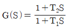
의 백터궤적은?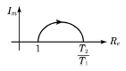
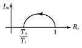
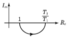
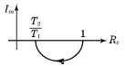
(정답률: 64%)
63. 그림과 같이 콘덴서 3F와 2F가 직렬로 접속된 회로에 전압 20V를 가하였을 때 3F콘덴서 단자의 전압 V1은 몇 V인가?
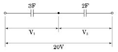
- 5
- 6
- 7
- 8
(정답률: 54%)
64. 기준권선과 제어권선의 두 고정자권선이 있으며, 90도 위상차가 있는 2상 전압을 인가하여 회전자계를 만들어서 회전자를 회전시키는 전동기는?
- 동기전동기
- 직류전동기
- 스탭전동기
- AC 서보전동기
(정답률: 77%)
65. 그림과 같은 파형의 평균값은 얼마인가?
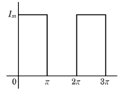
- 2Im
- Im
- Im/2
- Im/4
(정답률: 66%)
66. 전기로의 온도를 1000℃로 일정하게 유지시키기 위하여 열전도계의 지시값을 보면서 전압조정기로 전기로에 대한 인가전압을 조절하는 장치가 있다. 이 경우 열전 온도계는 다음 중 어느 것에 해당 되는가?
- 조작부
- 검출부
- 제어량
- 조작량
(정답률: 69%)
67. 제어요소는 무엇으로 구성되어 있는가?
- 비교부
- 검출부
- 조절부와 조작부
- 비교부와 검출부
(정답률: 82%)
68. 자체 판단능력이 없는 제어계는?
- 서보기구
- 추치 제어계
- 개회로 제어계
- 폐회로 제어계
(정답률: 59%)
69. 교류전류의 흐름을 방해하는 소자는 저항이외에도 유도코일, 콘덴서 등이 있다. 유도코일과 콘덴서 등에 대한 교류 전류의 흐름을 방해하는 저항력을 갖는 것을 무엇이라고 하는가?
- 리액턴스
- 임피던스
- 컨덕턴스
- 어드미턴스
(정답률: 66%)
70. 목푯값이 시간적으로 임의로 변하는 경우의 제어로서 서보기구가 속하는 것은?
- 정치 제어
- 추종 제어
- 마이컴 제어
- 프로그램 제어
(정답률: 62%)
71. 220V, 1kW의 전열기에서 전열선의 길이를 2배로 늘리면 소비전력은 늘리기 전의 전력에 비해 몇 배로 변화 하는가?
- 0.25
- 0.5
- 1.25
- 1.5
(정답률: 52%)
72. PLC 제어의 특징으로 틀린 것은?
- 소형화가 가능하다.
- 유지보수가 용이하다.
- 제어시스템의 확장이 용이하다.
- 부품간의 배선에 의해 로직이 결정된다.
(정답률: 78%)
73. 3300/200V, 10kVA인 단상변압기의 2차를 단락하여 1차측에 300V를 가하니 2차에 120A가 흘렀다. 1차 정격전류(A) 및 이 변압기의 임피던스 전압(V)은 약 얼마인가?
- 1.5A, 200V
- 2.0A, 150V
- 2.5A, 330V
- 3.0A, 125V
(정답률: 36%)
74. 제어기기에서 서보전동기는 어디에 속하는가?
- 검출기기
- 조작기기
- 변환기기
- 증폭기기
(정답률: 81%)
75. 지시 전기계기의 정확성에 의한 분류가 아닌 것은?
- 0.2급
- 0.5급
- 2.5급
- 5급
(정답률: 70%)
76. R, L, C 직렬회로에서 인가전압을 입력으로, 흐르는 전류를 출력으로 할 때 전달함수를 구하면?
- R+LS+CS
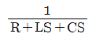
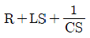
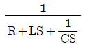
(정답률: 62%)
77. 그림과 같은 브리지정류기는 어느 점에 교류입력을 연결해야 하는가?
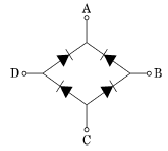
- B-D점
- B-C점
- A-C점
- A-B점
(정답률: 72%)
78. 피드백 제어계에서 반드시 있어야 할 장치는?
- 전동기 시한 제어장치
- 발진기로서의 동작 장치
- 응답속도를 느리게 하는 장치
- 목푯값과 출력을 비교하는 장치
(정답률: 85%)
79. 주상변압기의 고압측에 몇 개의 탭을 두는 이유는?
- 선로의 전압을 조정하기 위하여
- 선로의 역률을 조정하기 위하여
- 선로의 잔류전하를 방전시키기 위하여
- 단자가 고장이 발생하였을 때를 대비하기 위하여
(정답률: 58%)
80. 다음 특성 방정식 중 계가 안정될 필요조건을 갖춘 것은?
- S3+9S2+17S+14=0
- S3-8S2+13S-12=0
- S4+3S2+12S+8=0
- S3+2S2+4S-1=0
(정답률: 68%)